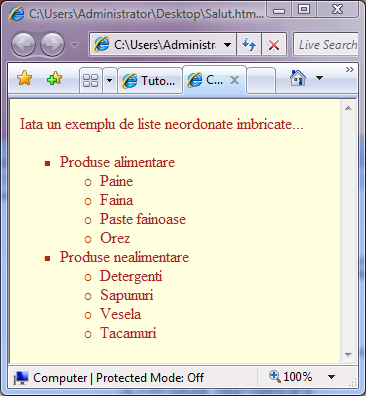

Liste imbricate
Listele imbricate se pot realiza avand doar grija respectarii regulilor de imbricare...
Adica daca in interiorul unei liste, dupa unul din itemi, este inceputa una noua, atunci acea lista
imbricata trebuie terminata inainte de urmatorul item al listei parinte.
Iata un exemplu de liste neordonate imbricate:

In continuare este exemplificata imbricarea listelor ordonate...
Ultimul exemplu ilustreaza o imbricare mixta, intre liste de diferite tipuri:

Inapoi la Liste...